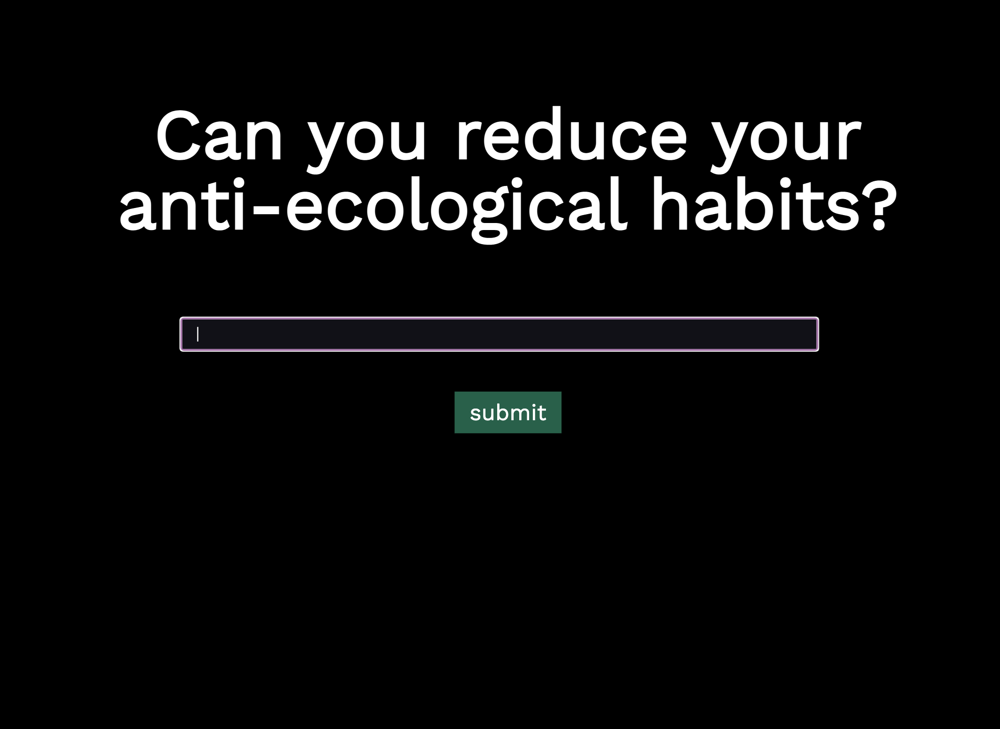
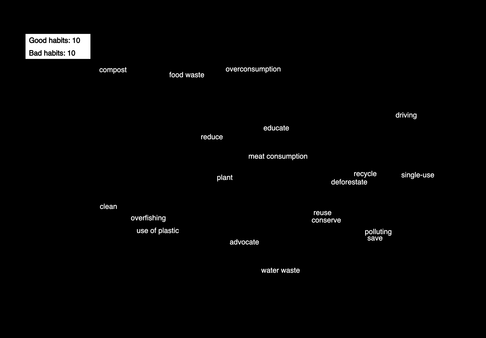
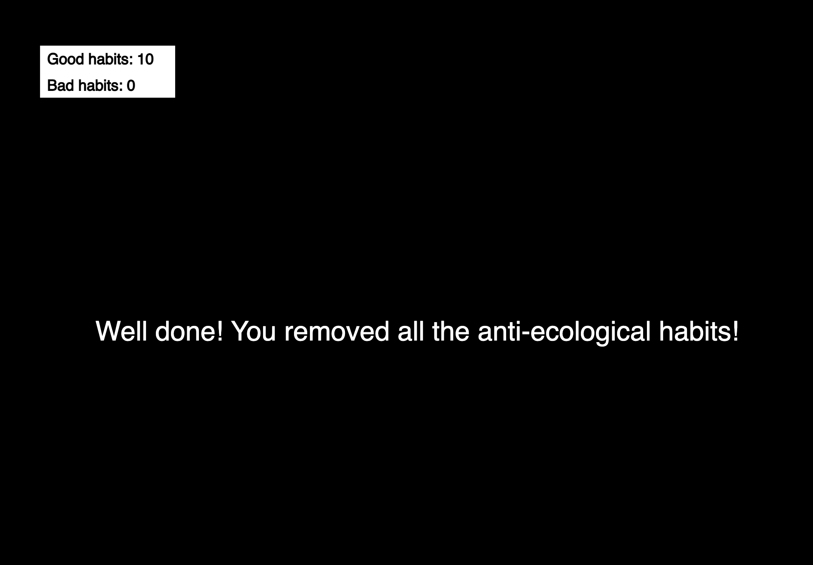

Our habits
Introduction
“Our Habits” is a single-user, interactive, game experience which wishes to raise awareness about our daily habits that may or may not be sustainable and eco-friendly. It is targeted to a younger audience, aged between 10 to 16 years old. In this game, the user has to remove all the words that they believe constitute bad habits and harm the environment in order to get a visual reward.
Concept and Background Research
My primary motivation for creating work related to the environment is the ongoing crisis we have been facing over the past few decades. The human impact on the planet has been catastrophic, and we urgently need to take action to reverse the damage we've caused.
In recognition of this, I have chosen to address my work to a younger audience. It is critical that the next generation is informed and equipped with the knowledge, the skills and the sensitivity necessary to tackle environmental challenges. By educating and empowering young people, we can work together to create a sustainable future for ourselves and the upcoming generations.
The concept behind this work is deceptively simple, yet deeply impactful. A large projection will display a variety of floating words related to humans’ everyday habits and their impact on the environment. Positioned in front of the projection, a touch screen will invite users to participate in the experience by suggesting words, related to actions, that they believe should be removed from the display and symbolically, from our habits. By empowering the audience to play an active role in the installation, I hope to create a sense of shared responsibility while dealing with environmental challenges.
When a user correctly identifies and removes a word that represents a negative environmental habit, they will receive a congratulatory message, reinforcing the importance of positive actions. However, if a user inadvertently removes a beneficial word for the environment, they will be gently prompted to try again, with the goal of ultimately achieving a collective removal of all the negative words.
"Our habits” aims to create a positive and memorable experience that inspires and motivates participant children to make more sustainable choices in their daily lives.
Technical Implementation
The installation will consist of a projector and a touch screen. When a user inputs a word on the touch screen, the word is transmitted via a server and node.js with socket.io to a p5.js sketch projected on the wall. The front end of the touch screen is an HTML website with CSS for styling. The input field of the page is made with JavaScript (main.js). On the projection screen, a p5.js sketch will be receiving the message that the user is sending from the input form on the touchscreen. Although the two devices are in the same space, the connection between them is made using socket.io instead of OSC for its greater versatility, allowing for future development with multiple devices.
In terms of design, the focus is on simplicity and accessibility. The touch screen has large fonts and high contrast to ensure that the interface is accessible to as many people as possible. Similarly, the projection display is designed with minimalism, using the same design principles as the touch screen to maintain consistency throughout the installation. The use of simple colors and typography also serves to keep the user's focus on the words themselves and the message they convey. By avoiding distracting visual elements, I hope to foster greater engagement with the content and to facilitate a more meaningful experience for the user.

Reflection and Future Development
Interactive technologies have proven to be highly effective in engaging users in a dialogue about environmental issues. Many museums are working towards including more interactive applications and games in their visitors’ experience to create a more engaging and immersive learning environment. Following this direction, the current installation is a simple game that attempts to convey an important message.
For future development, there are several directions that could be pursued to further develop this installation. One approach could be to incorporate 3D visual elements, which can be more attractive to younger audiences. A suitable library for such development would be three.js, which allows for the creation of interactive 3D graphics in a web browser. Additionally, greater feedback through both graphics and sound could enhance the overall user experience. Lastly, a possible direction for future development would be to move beyond the use of words and introduce 3D objects that represent actions that are harmful to the environment. Users would then be able to interact with these objects and relate more directly to the displayed actions, which would make the game more immersive.
Code References
Socket io Documentation
Coding Train
https://github.com/CodingTrain/website-archive
flanniganable [accessed 28 April 2023]